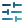

stranding-dataLucide: table-properties
environmental-forcingLucide: waves-arrow-down

simulation-setupLucide: sliders-horizontal
review-runLucide: clipboard-check
results-exportLucide: folder-output
netcdf-datasetLucide: file-chart-column
study-areaLucide: map-pinned
observation-selectionLucide: list-filter-plus
drift-durationLucide: timer
 windageLucide: wind
particle-releaseLucide: git-fork
model-physicsLucide: settings
ocean-currentsLucide: waves-arrow-up
windLucide: wind
wavesLucide: waves-horizontal
bathymetryLucide: layers
sea-surface-temperatureLucide: thermometer
landmaskLucide: map
locationLucide: map-pin
date-timeLucide: calendar-clock
trajectoryLucide: route
particlesLucide: circle-dot-dashed
uncertaintyLucide: circle-question-mark
validatedLucide: shield-check
folderLucide: folder
search-inspectLucide: search
addLucide: circle-plus
removeLucide: circle-minus
runLucide: circle-play
exportLucide: file-up
windageLucide: wind
particle-releaseLucide: git-fork
model-physicsLucide: settings
ocean-currentsLucide: waves-arrow-up
windLucide: wind
wavesLucide: waves-horizontal
bathymetryLucide: layers
sea-surface-temperatureLucide: thermometer
landmaskLucide: map
locationLucide: map-pin
date-timeLucide: calendar-clock
trajectoryLucide: route
particlesLucide: circle-dot-dashed
uncertaintyLucide: circle-question-mark
validatedLucide: shield-check
folderLucide: folder
search-inspectLucide: search
addLucide: circle-plus
removeLucide: circle-minus
runLucide: circle-play
exportLucide: file-up